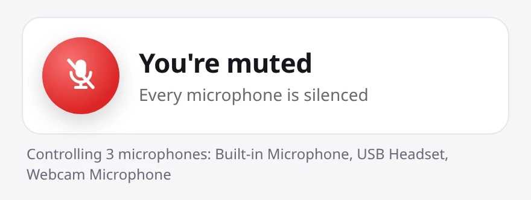

Mute your microphone with a keyboard shortcut on Windows
For Windows 10 and 11 · Updated November 2026
Windows doesn't have one key that mutes every microphone. This guide shows how to set that up with MuteDot in a couple of minutes, and what Windows and your call apps can do on their own.
Install MuteDot, then press Ctrl + Shift + M. Every microphone on your PC is muted, in every app, and a small red MUTED sign stays on screen until you press it again.
- Set up MuteDot
- Change the shortcut
- Push-to-talk
- Start with Windows
- Without MuteDot
- If something's wrong
Set up MuteDot
-
Install it
After you buy, Gumroad emails you a download link. Download the Windows installer (the file ending in
-setup.exe) and open it.If Windows shows "Windows protected your PC", click More info, then Run anyway.
-
Find the sign at the top of your screen
MuteDot starts straight away and puts a small sign at the top middle of your screen, just under where a webcam usually sits. Green with LIVE means people can hear you.

-
Press Ctrl + Shift + M to mute
The sign turns red and says MUTED, and you hear a short falling chime. Every microphone is now off, in every app.

-
Press it again to unmute
The sign turns green again and the chime rises.
Want to see which microphones MuteDot controls? Right-click the sign to open Settings. The list is at the top.

Change the shortcut
-
Open Settings
Right-click the sign. You can also right-click the MuteDot icon near the clock and choose Settings… (you may need to click the ^ arrow to see it).
-
Click the current shortcut
It's under Shortcuts, next to Mute / unmute.

-
Press the keys you want
The box says "Press keys…" while it waits. Press your new combination and it saves straight away. Press Esc to cancel.

Letters, numbers and Space need Ctrl, Alt or Shift with them, so you can't mute yourself by accident while typing. Keys like F9 or Pause work on their own.
Use push-to-talk
Push-to-talk keeps you muted and lets you talk only while you hold a key, like a walkie-talkie.
-
Pick a key
In Settings, click Click to set next to Push-to-talk, then press the key you want to hold. F9 is a good choice because you don't use it for typing.

-
Mute, then hold the key to talk
Press Ctrl + Shift + M to mute. Hold your push-to-talk key whenever you want to speak. The sign says TALKING while you hold it, and you're muted again as soon as you let go.

To turn push-to-talk off, click its box and press Backspace.
Start MuteDot with Windows
In Settings, under General, turn on Launch at login. MuteDot then starts every time you sign in, so it's ready before your first call.

Stream Deck and scripts
Run MuteDot with --toggle, --mute or --unmute to control it from a Stream Deck button or a script. --status prints muted or live.
Without MuteDot
Windows 11's shortcut
Windows 11 has Win + Alt + K. It only works in call apps that support it, such as Microsoft Teams, and only while you're in a call. Windows 10 has no mute shortcut at all.
Turning the microphone off in Settings
You can switch microphone access off under Settings → Privacy & security → Microphone on Windows 11, or Settings → Privacy → Microphone on Windows 10. It takes several clicks each time, and it's easy to forget to turn it back on before your next call.
Each call app's own shortcut
| App | Mute / unmute |
|---|---|
| Zoom | Alt + A |
| Microsoft Teams | Ctrl + Shift + M |
| Google Meet | Ctrl + D |
| Discord | Ctrl + Shift + M |
| Slack huddles | Ctrl + Shift + Space |
The catch with these:
- Every app uses a different key.
- Most only work while that app's window is in front.
- Each one only mutes you in that app. If another app is also using your mic, it still hears you.
If something's not working
Settings says the shortcut is unavailable
Another app is already using that key combination. Pick a different one, as shown in Change the shortcut.
I can't see the sign
Open Settings from the MuteDot icon near the clock and check that Show indicator is on. If Only show when live is on, the sign hides while you're muted, which is expected. If it's somewhere off screen, click Reset position.
My call app says I'm unmuted
Your call app's mute button doesn't know about MuteDot, so it can say you're unmuted while MuteDot has the microphone muted. Nothing gets through. Go by the MuteDot sign.
Windows 10/11 and Linux. 30-day money-back guarantee.